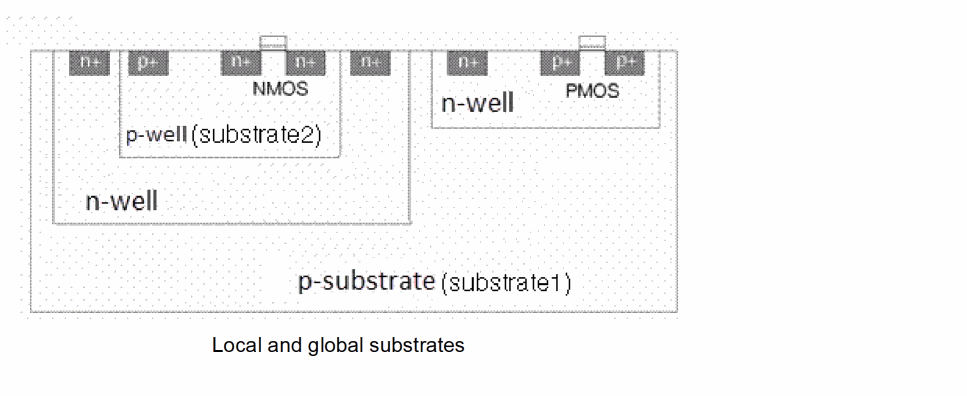

Bulk Area Connectivity Extraction - Identifying the Substrate Area
Before we discuss why it is important to identify the substrate area for bulk area extraction, let us find out what a substrate means in the context of chip fabrication.
A substrate is the base layer of a chip on which the various devices are placed to form a functional model. The substrate can be n-type or p-type. Depending on the substrate type, devices can be placed directly on the substrate or inside a well shape.
For example, in the figure below, the substrate is p-type. So, the NMOS (Nch) devices are directly placed over the substrate. Conversely, the PMOS (Pch) devices are placed over an n-well shape. The p-substrate and the n-well shape form a diode that must be reverse-biased to prevent the current to flow from one side to the other. This is why the p-type substrate is polarized to a net such as VSS, similar to the bulk terminal of the Nch devices. Likewise, the n-well shape is polarized to a net such as VDD, similar to the bulk terminal of the Pch devices.
- The n-well shape drawn over the substrate isolates the enclosed devices from the main substrate.
-
The n-well shape can be a guard ring. In such a case, the isolation created by the Nwell guard ring divides the substrate into two areas—substrate1 and substrate2—as displayed in the figure below.

The main substrate is the Global substrate that belongs to the entire chip. The Local substrate, which is the area enclosed within the n-well guard ring, is shown in the figure below. The local and global substrates are used in a design configuration to separate the digital and analog parts on a chip.
With this kind of isolation, the bulk instance terminals of devices placed on one substrate area are not connected to the bulk instance terminals of devices placed on the other substrate area.
See Bulk Area Connectivity Extraction - Isolating the Substrate and Well Layers.
The n-well guard ring can additionally be overlapped by an n-buried shape. This increases the isolation between the global and the local substrate by preventing the current to flow vertically between the two substrate areas.
See Substrate and Well Isolation Using a Buried Layer.
When extracting connectivity, you identify the substrate area by representing it using the PR boundary. If there is no PR boundary in the design, the substrate is considered to extend over the entire area of the current layout.
You can then partition the global substrate into specific local substrates. Only those devices on the given substrate area that have their bulk area (physical shape or derived area) fully enclosed within the PR boundary (if present) are considered for extraction.
For example, in the figure below, the two devices that are labeled as “unconnected” do not have their bulk area fully inside the PR boundary. So, these devices are not considered for connectivity extraction.
Related Topics
Bulk Area Connectivity Extraction - Identify the Bulk Area.
Bulk Area Connectivity Extraction
Connectivity Propagation through the Substrate and Well Areas
Return to top